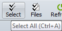

Tweak Options
Tools > Options > Tweaks


|
Tweak Options Tools > Options > Tweaks |
|
|
Tweaks are advanced or obscure program options that we group here to avoid cluttering other areas. Check for Updates By default, Beyond Compare checks our website for new versions of the software. You can change the number of days between checks or unmark the Check every checkbox to never check. Editor Display Most of the display settings for text views are found on the File View Colors, Fonts page of the Options dialog. Settings specific to the text editors are here. Syntax highlighting is normally suppressed on difference lines so that it doesn't interfere with difference coloring schemes. Mark the Show syntax highlighting on difference lines checkbox to change this behavior. Use crosshatching for lines beyond the end of file helps identify the end of your text files, particularly when comparing a longer file with a shorter one. Right side gutter for left editor (compare only) positions the copy buttons close together in the center of the view, and keeps the scrollbars at the outer edges. It has no effect if you are using the View > Over-under layout Enable font linking in editors allows the text editor to use additional fonts in order to support characters from multiple languages. Use orphan color causes file views to use a separately configurable color for items that are only on one side of the comparison. You can add or subtract pixels from Extra line spacing to change the density of text in the view. To show a vertical line at a specific column position, set Show column line at to the desired value. Set it to zero (0) to hide the line. If you use a proportionally spaced font, the column position will be determined by the width of the space character. Dim inactive pane by darkens the non-active side of the comparison in order to help you focus on the active side.
File Operations Beep after long file operations causes an audible sound when file operations such as copy and move are completed, unless they take less than 3 seconds.
Mark the Check for files changed on disk checkbox to check for a newer copy of a file when returning focus to a file view. If found, Beyond Compare will prompt "File changed on disk, reload?" Mark the Automatically reload unless changes will be discarded checkbox to have Beyond Compare automatically load the newer file as long as you haven't made changes to the displayed file. Comparison priority can be changed to affect the order in which background work is performed. Buffer size for binary compare can be changed to affect speed. Home View Sticky session selection can be set to remember the last session picked from a Home view instead of the last session updated in the application. Interface Here is what a toolbar looks like when the Show hints for toolbar buttons, etc. and Show keyboard shortcut in hints checkboxes are marked:  ESC key closes file views applies to all file view types, such as Text Compare, Table Compare and Picture Compare. It does not affect folder views. Single vertical scrollbar can be marked to save horizontal space by hiding a redundant vertical scrollbar. Sticky splitter position can be marked to have the size of the panes in file views be user defined instead of automatically determined. Pick Compress to fit to compress the thumbnail to the available vertical space. Pick Allow scrolling to show a vertical scrollbar instead. Log Panel Operation summaries Log a summary of each operation. Operation details Log details of each operation, including each file affected. Warnings Log warnings and errors. FTP trace Log messages to and from FTP site. Debug messages Log messages useful to Scooter Software's technical support staff. Display up to defines how many messages the log can handle before it starts deleting the oldest ones. If a file is entered for Automatically save messages to file, it will be created when necessary. Metrics Max auto-saved sessions Defines how many sessions can automatically be saved before the oldest one will be automatically deleted. Enter zero (0) to disable the auto-save sessions feature. Max most recently used items Defines how many items can automatically be remembered before the oldest one will be automatically deleted. For example, it affects how base folder dropdown lists. Milliseconds before help hint appears Defines how long to wait before showing a popup hint. Milliseconds before help hint disappears Defines how long a popup hint remains visible. Milliseconds before incremental search resets Defines how long to wait for the user to type in the next character for an incremental search. Name Filter Presets Specify the preset name filter choices, available on the folder view's toolbar. Use simple wildcard definitions separated by semicolons for the mask. Example: *.htm;*.html;*.jpg
Scripts Mark the Beep when finished checkbox for an audible cue that a script has finished.
Mark the Close when finished checkbox to exit the program when the script has finished. Specify a Shared scripts folder to be the location for shared scripts. If a script filename is not found in the current folder, Beyond Compare will look for it there. Shared Sessions File If a Shared sessions file is specified, shared sessions will appear in your sessions tree. You can use but not modify them. Use Tools > Export Settings to create a shared sessions file. |